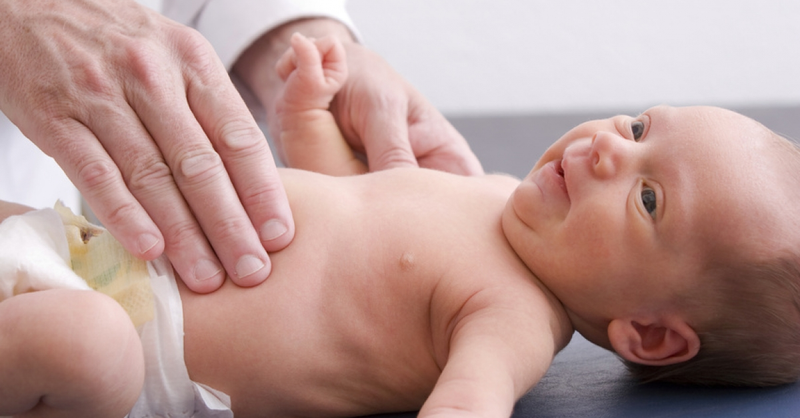
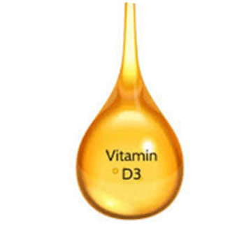
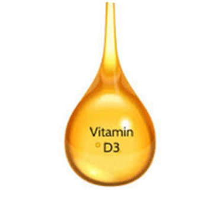
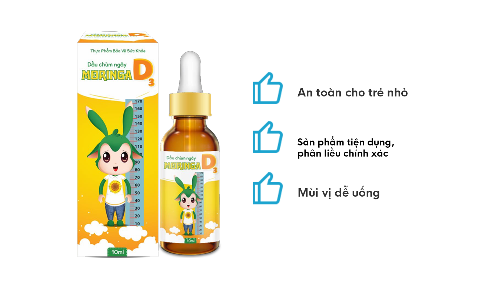

ĐỒNG HÀNH CÙNG BÉ - CHẮP CÁNH ƯỚC MƠ
Dầu chùm ngây Moriga D3
Niềm tin của triệu bà mẹ Việt Nam
CÓ THỂ BẠN CHƯA BIẾT?
Còi xương là căn bệnh hay gặp ở trẻ dưới 3 tuổi. Bệnh còi xương có thể gây biến dạng xương của trẻ, thậm chí là dẫn tới tử vong do các bệnh nhiễm khuẩn, nhất là viêm phổi.
Vậy bệnh còi xương ở trẻ là gì?
Còi xương là bệnh loạn dưỡng xương do thiếu vitamin D hoặc rối loạn chuyển hóa vitamin D trong cơ thể. Căn bệnh này hay gặp ở trẻ nhỏ, đặc biệt là trẻ dưới 3 tuổi.
Vitamin D là loại vitamin tan trong chất béo, có trong thức ăn từ động vật như cá, gan, trứng, sữa,... Vitamin D là một nhóm gồm từ D2 – D7, trong đó 2 chất có hoạt tính mạnh nhất là D2 và D3. Vitamin D có vai trò rất quan trọng trong quá trình tạo xương nhờ tác dụng tăng hấp thu canxi và photpho ở ruột, tăng tái hấp thu canxi ở thận, tham gia vào quá trình canxi hóa sụn tăng trưởng nên nó rất quan trọng trong sự phát triển hệ xương của trẻ em. Khi thiếu vitamin D, ruột không hấp thu đủ canxi và photpho, làm canxi máu giảm và canxi trong xương bị huy động để ổn định nồng độ canxi máu, dẫn tới bệnh còi xương ở trẻ em, làm trẻ chậm lớn, chậm biết đi, chân vòng kiềng,...
DẤU HIỆU CỦA BỆNH CÒI XƯƠNG Ở TRẺ EM
Dấu hiệu còi xương sớm ở trẻ là trẻ hay quấy khóc, nôn trớ, ra mồ hôi trộm, ngủ không yên giấc, rụng tóc phía sau đầu (vành khăn). Trẻ bị còi xương cấp có biểu hiện tiếng thở rít thanh quản, hay nôn, nấc khi ăn, cơn khóc lặng, có thể bị co giật do hạ calci máu. Dấu hiệu còi xương thể bụ bẫm tương tự với còi xương thông thường. (Bệnh còi xương thể bụ xảy ra ở những trẻ có cân nặng tốt, thậm chí là thừa cân béo phì nhưng vẫn bị còi xương do thiếu vitamin D). Nếu không kịp thời điều trị, sau khoảng vài tuần, trẻ sẽ xuất hiện các triệu chứng ở xương. Tùy từng lứa tuổi mà các biểu hiện ở xương trẻ sẽ khác nhau. Cụ thể.
Ở TRẺ NHỎ
Sờ thấy xương sọ mềm, đầu dễ bị méo mó do tư thế nằm, đầu bẹt về phía sau hoặc một bên. Thóp rộng của trẻ chậm liền, bờ thóp mềm, đầu to có bướu, răng trẻ mọc chậm, răng mọc lộn xộn và men răng xấu.
Ở TRẺ lỚN HƠN
Có biến đổi xương lồng ngực, có chuỗi hạt sườn. Các xương chi xuất hiện vòng cổ tay và cổ chân. Các cơ nhẽo nên trẻ chậm biết lẫy, bò, ngồi, đứng, đi,... Nếu không kịp thời điều trị có thể để lại nhiều di chứng cho trẻ như: lồng ngực biến dạng, ngực dô ra phía trước như ngực gà, gù, chân tay cong, chân vòng kiềng, chân chữ bát, vẹo cột sống, khung chậu hẹp (ảnh hưởng tới chức năng sinh sản của bé gái),... Ngoài ra, trẻ bị còi xương còn bị xanh xao, thiếu máu và hay bị viêm phổi tái phát nhiều lần.
CÁCH ĐIỀU TRỊ VÀ PHÒNG NGỪA BỆNH CÒI XƯƠNG Ở TRẺ
1.Thay đổi chế độ ăn uống, sinh hoạt
Ngay từ khi mang thai người mẹ nên thường xuyên tắm nắng để tiếp nhận đủ vitamin D.
Thai phụ nên tăng cường vitamin D từ thức ăn: thêm gan cá, cua, trứng, sữa, bơ,... vào chế độ ăn vì những thực phẩm này rất giàu vitamin D.
Bà bầu cần làm việc, nghỉ ngơi hợp lý để tránh bị sinh non. Thai phụ có thể uống vitamin D khi thai nhi được 7 tháng với liều 600.000 đơn vị trong 3 tuần (200.000 đơn vị/tuần).
Trẻ sau sinh cần được bú ngay, bú sữa mẹ hoàn toàn trong 6 tháng đầu.
Tránh cho trẻ ăn dặm quá sớm khi mới 3 – 4 tháng tuổi.
Khi trẻ bắt đầu ăn dặm cha mẹ nên cho trẻ ăn uống đủ chất, đặc biệt là cua, cá, trứng, gan, sữa, phomai, các loại rau xanh,... Bữa ăn của trẻ nên có dầu ăn hoặc mỡ để tăng hấp thu vitamin D.
Cho trẻ phơi nắng đều đặn khi trời nắng đẹp: khi da được tiếp xúc với ánh nắng mặt trời thì 7-dehydro cholesterol trong da sẽ chuyển đổi thành vitamin D3. Thời gian tắm nắng thích hợp là 10 – 15 phút mỗi ngày vào buổi sáng hoặc chiều.
2. Dùng sản phẩm Dầu chùm ngây Moringa D3
Với mong muốn được đồng hành và chia sẻ những khó khăn mà các bà mẹ Việt Nam gặp phải, chúng tôi cho ra đời dòng sản phẩm mang tên Dầu chùm ngây Moringa D3
Đây là sản phẩm duy nhất trên thị trường kết hợp giữa Dầu hạt chùm ngây và Vitamin D3 giúp bổ sung vitamin D. Hơn thế nữa, dầu chùm ngây còn mang lại nhiều công dụng.
 

3 LÝ DO MẸ NÊN MUA DẦU CHÙM NGÂY MORINGA D3 NGAY HÔM NAY
Hơn 20.000 bà mẹ Việt Nam tin dùng sản phẩm, bạn thì sao?
Thu Thanh - Ninh Bình
Nhìn con ăn ngon, phát triển toàn diện tôi rất mừng, cảm ơn sản phẩm đã cho tôi những ngày nhàn dỗi như thế.

Ngọc Thùy - Hà Nội
"Nhìn bé rút ngắn dần khoảng cách với các bạn cùng trang lứa tôi cảm thấy hạnh phúc vì những cố gắng của mình đã được bù đắp."

Bích Thảo - Bình Dương
Cảm ơn Dầu chùm ngây Moringa D3 đã đồng hành cùng tôi trong suốt quá trình nuôi con lớn. Bé được phát triển toàn diện mà tôi có thể yên tâm đi làm